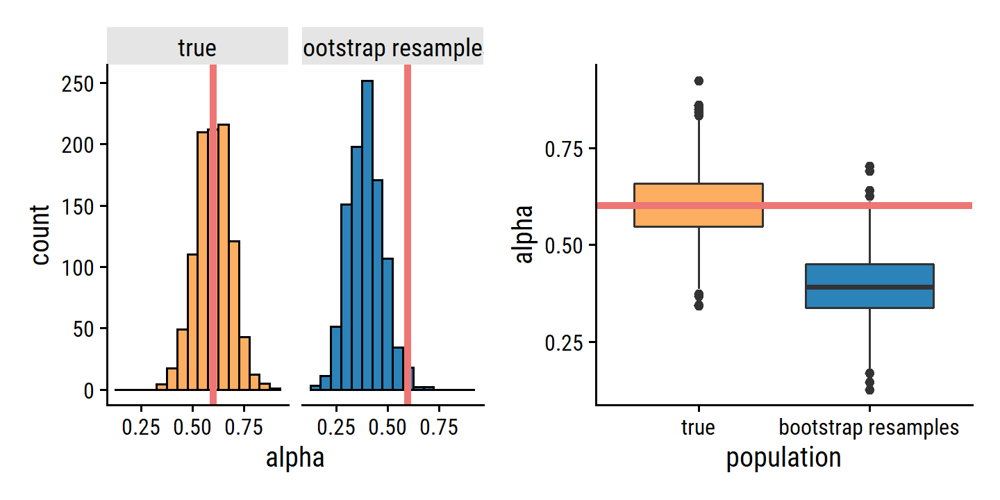

5 Resampling Methods
Resampling methods are an indispensable tool in modern statistics. They involve repeatedly drawing samples from a training set and refitting a model of interest on each sample in order to obtain additional information about the fitted model. For example, in order to estimate the variability of a linear regression fit, we can repeatedly draw different samples from the training data, fit a linear regression to each new sample, and then examine the extent to which the resulting fits differ. Such an approach may allow us to obtain information that would not be available from fitting the model only once using the original training sample.
In this chapter, we discuss two of the most commonly used resampling methods, cross-validation and the bootstrap.
Cross-validation is most often used to estimate test error associated with a statistical learning method, whereas the boostrap is most commonly used to provide a measure of accuracy for a given parameter/method.
The process of evaluating a model’s performance is known as model assessment, whereas the process of selecting the proper level of flexibility for a model is known as model selection.
5.1 Cross Validation
Sometimes we want to estimate the test error rate using the available training data. A number of approaches can be used for this. In this section we consider methods which involve holding out a subset of the training data from the fitting process, then applying the model to that hold-out set for model assessment.
5.1.1 The Validation Set Approach
This simple strategy involves randomly dividing available observations into training and validation sets. The model is fit on the training set, and used to make predictions on the validation set. The corresponding metric from the validation set predictions – usually MSE in the case of a quantitative response – provides an estimate of the test error rate.
To illustrate this, load the Auto data set and R packages:
auto <- ISLR2::Auto
library(tidyverse)
library(tidymodels)
library(broom)
library(gt)
library(patchwork) # for composing plots
library(tictoc)
# Load my R package and set the ggplot theme
library(dunnr)
extrafont::loadfonts(device = "win", quiet = TRUE)
theme_set(theme_td())
set_geom_fonts()
set_palette()Randomly split the data into 50% training and 50% validation, fit on the training set, and compute the MSE on the validation set.
Since I’ll be repeating this 10 times to reproduce the figure, make a couple functions.
First, a function to set a random seed and split the data into training and validation set (called assessment set in the rsample package):
auto_validation_split <- function(seed) {
set.seed(seed)
validation_split(auto, prop = 0.5)
}
auto_splits <- auto_validation_split(seed = 10)
auto_splits## # Validation Set Split (0.5/0.5)
## # A tibble: 1 x 2
## splits id
## <list> <chr>
## 1 <split [196/196]> validationSimilar to the initial_split workflow, I can access the training and validation sets as follows:
training(auto_splits$splits[[1]]) %>% head()## mpg cylinders displacement horsepower weight acceleration year origin
## 139 14.0 8 318 150 4457 13.5 74 1
## 333 29.8 4 89 62 1845 15.3 80 2
## 373 27.0 4 151 90 2735 18.0 82 1
## 73 15.0 8 304 150 3892 12.5 72 1
## 213 16.5 8 350 180 4380 12.1 76 1
## 348 37.0 4 85 65 1975 19.4 81 3
## name
## 139 dodge coronet custom (sw)
## 333 vokswagen rabbit
## 373 pontiac phoenix
## 73 amc matador (sw)
## 213 cadillac seville
## 348 datsun 210 mpgassessment(auto_splits$splits[[1]]) %>% head()## mpg cylinders displacement horsepower weight acceleration year origin
## 1 18 8 307 130 3504 12.0 70 1
## 2 15 8 350 165 3693 11.5 70 1
## 3 18 8 318 150 3436 11.0 70 1
## 5 17 8 302 140 3449 10.5 70 1
## 6 15 8 429 198 4341 10.0 70 1
## 7 14 8 454 220 4354 9.0 70 1
## name
## 1 chevrolet chevelle malibu
## 2 buick skylark 320
## 3 plymouth satellite
## 5 ford torino
## 6 ford galaxie 500
## 7 chevrolet impalaSecond, a function to fit 10 models (1 to 10 polynomial degrees of freedom) on the training set, and evaluate on the validation set with fit_resamples.1
auto_rec <- recipe(mpg ~ horsepower, data = auto)
lm_workflow <- workflow() %>% add_model(linear_reg())
evaluate_poly_fits <- function(auto_splits) {
tibble(poly_df = 1:10) %>%
mutate(
lm_rec = map(
poly_df, ~ auto_rec %>% step_poly(horsepower, degree = .x)
),
lm_fit = map(
lm_rec,
~ lm_workflow %>% add_recipe(.x) %>% fit_resamples(auto_splits)
),
lm_metrics = map(lm_fit, collect_metrics)
) %>%
unnest(lm_metrics) %>%
filter(.metric == "rmse") %>%
select(poly_df, rmse = mean)
}
auto_poly_fits_validation <- evaluate_poly_fits(auto_splits)
auto_poly_fits_validation## # A tibble: 10 x 2
## poly_df rmse
## <int> <dbl>
## 1 1 5.14
## 2 2 4.46
## 3 3 4.50
## 4 4 4.49
## 5 5 4.39
## 6 6 4.36
## 7 7 4.33
## 8 8 4.33
## 9 9 4.32
## 10 10 4.60Now reproduce Figure 5.2:
auto_poly_fits_validation <- bind_rows(
# 9 additional sets of fits
map_dfr(
1:9,
function(seed) {
auto_splits <- auto_validation_split(seed)
evaluate_poly_fits(auto_splits)
},
.id = "rep"
),
auto_poly_fits_validation %>% mutate(rep = "10")
)
# Use a 10 color palette from the MetBrewer package
pal <- MetBrewer::met.brewer("Veronese", 10, type = "continuous")
p2 <- auto_poly_fits_validation %>%
ggplot(aes(x = poly_df, y = rmse^2, fill = rep)) +
geom_line(aes(color = rep), size = 1) +
expand_limits(y = c(15, 30)) +
scale_x_continuous(breaks = seq(2, 10, 2)) +
scale_color_manual(values = pal) +
scale_fill_manual(values = pal) +
labs(x = "Degree of polynomial", y = NULL) +
theme(legend.position = "none")
p1 <- p2 %+% filter(auto_poly_fits_validation, rep == "1") +
geom_point(aes(fill = rep), shape = 21, color = "white", size = 4) +
labs(y = "MSE")
p1 | p2
As is clear from the right-hand panel, this approach is highly variable depending on the testing/validation set split. Another downside is that, because the training set used to fit the data has fewer observations, it tends to overestimate the test error rate on the entire data set.
5.1.2 Leave-One-Out Cross Validation
Leave-one-out cross validation (LOOCV) attempts to address the shortcomings of the validation set approach. It still involves splitting the \(n\) observations into two parts, but it repeats it \(n\) times, with a single observation \((x_i, y_i)\) as the hold-out “set” and the remaining \(n-1\) observations as the training set. The MSE for each iteration is simply \(\text{MSE}_i = (y_i - \hat{y}_i)^2\). Then the LOOCV estimate of the MSE is the average over all observations:
\[ \text{CV}_{(n)} = \frac{1}{n} \sum_{i=1}^n \text{MSE}_i. \]
The LOOCV approach has a few advantages over the validation set approach:
- First, it has far less bias. In LOOCV, we repeatedly fit the statistical learning method using training sets that contain \(n − 1\) observations, almost as many as are in the entire data set. This is in contrast to the validation set approach, in which the training set is typically around half the size of the original data set. Consequently, the LOOCV approach tends not to overestimate the test error rate as much as the validation set approach does.
- Second, in contrast to the validation approach which will yield different results when applied repeatedly due to randomness in the training/validation set splits, performing LOOCV multiple times will always yield the same results: there is no randomness in the training/validation set splits.
Define a new function to split the data by LOOCV:2
auto_splits <- loo_cv(auto)
auto_splits## # Leave-one-out cross-validation
## # A tibble: 392 x 2
## splits id
## <list> <chr>
## 1 <split [391/1]> Resample1
## 2 <split [391/1]> Resample2
## 3 <split [391/1]> Resample3
## 4 <split [391/1]> Resample4
## 5 <split [391/1]> Resample5
## 6 <split [391/1]> Resample6
## 7 <split [391/1]> Resample7
## 8 <split [391/1]> Resample8
## 9 <split [391/1]> Resample9
## 10 <split [391/1]> Resample10
## # ... with 382 more rows392 splits, which is the number of observations, as expected. Fit:
auto_poly_fits_loo_cv <- evaluate_poly_fits(auto_splits)## Error: Problem with `mutate()` column `lm_fit`.
## i `lm_fit = map(lm_rec, ~lm_workflow %>% add_recipe(.x) %>% fit_resamples(auto_splits))`.
## x Leave-one-out cross-validation is not currently supported with tune.As the error says, LOOCV is not supported. Here’s an explanation I found online:
Leave-one-out methods are deficient compared to almost any other method. For anything but pathologically small samples, LOO is computationally excessive and it may not have good statistical properties. Although rsample contains a
loo_cv()function, these objects are not generally integrated into the broader tidymodels frameworks.
Fair enough.
For completeness, I will still get the LOOCV estimates using boot::cv.glm():
auto_poly_fits_loo_cv <- tibble(
poly_df = 1:10,
mse = map_dbl(poly_df,
function(poly_df) {
glm_fit <- glm(mpg ~ poly(horsepower, degree = poly_df), data = auto)
boot::cv.glm(auto, glm_fit)$delta[1]
}
)
)
auto_poly_fits_loo_cv## # A tibble: 10 x 2
## poly_df mse
## <int> <dbl>
## 1 1 24.2
## 2 2 19.2
## 3 3 19.3
## 4 4 19.4
## 5 5 19.0
## 6 6 19.0
## 7 7 18.8
## 8 8 19.0
## 9 9 19.1
## 10 10 19.55.1.3 \(k\)-fold Cross-Validation
\(k\)-fold CV involves randomly dividing the observations into \(k\) groups/folds of approximately equal size. The first fold is used as the validation/assessment set, and the remaining \(k-1\) folds used to fit the model. This is repeated \(k\) times, with each fold being used as the assessment set once. The \(k\)-fold CV estimate of the test error is then the average:
\[ \text{CV}_{(k)} = \frac{1}{k} \sum_{i=1}^k \text{MSE}_i. \]
This should look familiar:
It is not hard to see that LOOCV is a special case of \(k\)-fold CV in which \(k\) is set to equal \(n\). In practice, one typically performs \(k\)-fold CV using \(k\) = 5 or \(k\) = 10. What is the advantage of using \(k\) = 5 or \(k\) = 10 rather than \(k\) = \(n\)? The most obvious advantage is computational. LOOCV requires fitting the statistical learning method \(n\) times. This has the potential to be computationally expensive (except for linear models fit by least squares, in which case formula (5.2) can be used). But cross-validation is a very general approach that can be applied to almost any statistical learning method. Some statistical learning methods have computationally intensive fitting procedures, and so performing LOOCV may pose computational problems, especially if \(n\) is extremely large. In contrast, performing 10-fold CV requires fitting the learning procedure only ten times, which may be much more feasible. As we see in Section 5.1.4, there also can be other non-computational advantages to performing 5-fold or 10-fold CV, which involve the bias-variance trade-off.
Fit the polynomial models with 10-fold CV:
auto_10_fold_cv <- function(seed) {
set.seed(seed)
vfold_cv(auto, v = 10)
}
auto_splits <- auto_10_fold_cv(seed = 10)
auto_splits## # 10-fold cross-validation
## # A tibble: 10 x 2
## splits id
## <list> <chr>
## 1 <split [352/40]> Fold01
## 2 <split [352/40]> Fold02
## 3 <split [353/39]> Fold03
## 4 <split [353/39]> Fold04
## 5 <split [353/39]> Fold05
## 6 <split [353/39]> Fold06
## 7 <split [353/39]> Fold07
## 8 <split [353/39]> Fold08
## 9 <split [353/39]> Fold09
## 10 <split [353/39]> Fold10auto_poly_fits_10_fold_cv <- evaluate_poly_fits(auto_splits)
auto_poly_fits_10_fold_cv## # A tibble: 10 x 2
## poly_df rmse
## <int> <dbl>
## 1 1 4.90
## 2 2 4.35
## 3 3 4.35
## 4 4 4.37
## 5 5 4.31
## 6 6 4.31
## 7 7 4.28
## 8 8 4.29
## 9 9 4.30
## 10 10 4.37Now repeat this another 9 times.
Thought it won’t take too long to run, I’ll make use of parallel to speed it up a bit:
## Loading required package: foreach##
## Attaching package: 'foreach'## The following objects are masked from 'package:purrr':
##
## accumulate, when## Loading required package: iterators## Loading required package: paralleltic()
auto_poly_fits_10_fold_cv <- bind_rows(
# 9 additional sets of fits
map_dfr(
1:9,
function(seed) {
auto_splits <- auto_10_fold_cv(seed)
evaluate_poly_fits(auto_splits)
},
.id = "rep"
),
auto_poly_fits_10_fold_cv %>% mutate(rep = "10")
)
toc()## 91.87 sec elapsedNow reproduce Figure 5.4:
p2 <- auto_poly_fits_10_fold_cv %>%
mutate(mse = rmse^2) %>%
ggplot(aes(x = poly_df, y = mse, fill = rep)) +
geom_line(aes(color = rep), size = 1) +
expand_limits(y = c(15, 30)) +
scale_x_continuous(breaks = seq(2, 10, 2)) +
scale_color_manual(values = pal) +
scale_fill_manual(values = pal) +
labs(x = "Degree of polynomial", y = NULL) +
theme(legend.position = "none")
p1 <- p2 %+% mutate(auto_poly_fits_loo_cv, rep = "1") +
geom_point(aes(fill = rep), shape = 21, color = "white", size = 4) +
labs(y = "MSE")
p1 | p2
The \(k\)-fold CV approach (right panel) still has some variability due to random splitting, but much less than the validation set approach.
As a reminder, with cross-validation we are trying to approximate the true test MSE, which we cannot know for certain unless the data are simulated (like in Figure 5.6). The true error value itself is important if we want to know how a model will perform on independent data. However, if all we care about is parameter(s) that give the minimum error (like the degree of polynomial in these examples), then the CV estimate will usually come close to the true answer.
5.1.4 Bias-Variance Trade-Off for \(k\)-Fold Cross-Validation
In addition to being computationally more efficient than LOOCV, \(k\)-fold CV with \(k < n\) also often gives more accurate estimates of the test error rate due to the bias-variance tradeoff.
- \(k\)-fold CV has moderate bias in comparison to LOOCV, which is approximately unbiased.
- \(k\)-fold CV (average over \(k\) fitted models) tends to have lower variance than LOOCV (average over \(n\) fitted models, highly correlated with each other).
To summarize, there is a bias-variance trade-off associated with the choice of \(k\) in \(k\)-fold cross-validation. Typically, given these considerations, one performs \(k\)-fold cross-validation using \(k\) = 5 or \(k\) = 10, as these values have been shown empirically to yield test error rate estimates that suffer neither from excessively high bias nor from very high variance.
5.1.5 Cross-Validation on Classification Problems
Rather than quantitative \(Y\), cross-validation works just as well with qualitative \(Y\). Instead of MSE, we use the number of misclassified observations, \(\text{Err}_i = I(y_i \neq \hat{y}_i)\). The LOOCV error rate:
\[ \text{CV}_{(n)} = \frac{1}{n} \sum_{i=1}^n \text{Err}_i. \]
The \(k\)-fold CV and validation set error rates are defined analogously.
5.2 The Bootstrap
The bootstrap is a widely applicable and extremely powerful statistical tool that can be used to quantify the uncertainty associated with a given estimator or statistical learning method. As a simple example, the bootstrap can be used to estimate the standard errors of the coefficients from a linear regression fit. In the specific case of linear regression, this is not particularly useful, since we saw in Chapter 3 that standard statistical software such as R outputs such standard errors automatically. However, the power of the bootstrap lies in the fact that it can be easily applied to a wide range of statistical learning methods, including some for which a measure of variability is otherwise difficult to obtain and is not automatically output by statistical software.
The toy example in this section is about investment in two assets \(X\) and \(Y\). We wish to choose a fraction \(\alpha\) of investment into \(X\) which minimizes the total variance (risk) of the investment. In can be shown that the optimal value is given by:
\[ \alpha = \frac{\sigma_Y^2 - \sigma_{XY}}{\sigma_X^2 + \sigma_Y^2 - 2\sigma_{XY}}, \]
where \(\sigma_X^2 = \text{Var}(X)\), \(\sigma_Y^2 = \text{Var}(Y)\), and \(\sigma_{XY} = \text{Cov}(X, Y)\). In reality, we don’t know these variances and covariance, so we estimate them (e.g. \(\hat{\sigma}_X^2\)) using observations of \(X\) and \(Y\) to get an estimated \(\hat{\alpha}\).
To illustrate, we simulate 100 pairs of \(X\) and \(Y\), and compute the estimated \(\alpha\).
The simulation parameters are \(\sigma_X^2 = 1\), \(\sigma_Y^2 = 1.25\), and \(\sigma_{XY} = 0.5\).
Presumably, these are bivariate normally distributed, which I can simulate with the mvtnorm package:
library(mvtnorm)
sigma_x <- 1
sigma_y <- sqrt(1.25)
sigma_xy <- 0.5
# The variance-covariance matrix
sigma <- matrix(c(sigma_x^2, sigma_xy, sigma_xy, sigma_y^2), nrow = 2)
# Generate 5 observations
rmvnorm(n = 5, mean = c(0, 0), sigma = sigma)## [,1] [,2]
## [1,] -0.6198186 0.2723180
## [2,] -0.4510171 -1.4568201
## [3,] -0.0302161 -1.3962636
## [4,] -0.3405990 -0.3004827
## [5,] -0.3552014 1.1948117Write a function to compute \(\alpha\) from the simulated \(X\) and \(Y\):
sim_alpha <- function(xy = NULL) {
if (is.null(xy)) {
xy <- rmvnorm(n = 100, mean = c(0, 0), sigma = sigma)
}
x <- xy[,1]; y <- xy[,2]
(var(y) - cov(x, y)) / (var(x) + var(y) - 2 * cov(x, y))
}
sim_alpha()## [1] 0.577909Run four simulations and plot \(X\) vs \(Y\) for Figure 5.9
d4 <- tibble(sim = 1:4) %>%
rowwise() %>%
mutate(xy = list(rmvnorm(n = 100, mean = c(0, 0), sigma = sigma))) %>%
ungroup() %>%
mutate(alpha = map_dbl(xy, sim_alpha) %>% round(3),
x = map(xy, ~ .x[,1]), y = map(xy, ~ .x[,2])) %>%
unnest(cols = c(x, y))
d4 %>%
ggplot(aes(x, y)) +
geom_point(color = td_colors$nice$emerald, size = 2) +
facet_wrap(~alpha, labeller = "label_both") +
add_facet_borders()
For Figure 5.10, I first simulate 1000 data sets from the true population and estimate \(\alpha\) for each:
d <- bind_rows(
d4 %>% distinct(sim, alpha),
tibble(sim = 5:1000) %>%
rowwise() %>%
mutate(alpha = sim_alpha()) %>%
ungroup()
)
d## # A tibble: 1,000 x 2
## sim alpha
## <int> <dbl>
## 1 1 0.392
## 2 2 0.653
## 3 3 0.58
## 4 4 0.635
## 5 5 0.604
## 6 6 0.680
## 7 7 0.648
## 8 8 0.662
## 9 9 0.674
## 10 10 0.597
## # ... with 990 more rowsAnd then, using just the first simulated data set, use the rsample::boostraps() function to generate 1000 bootstrap resamples:
d1_boot <- d4 %>% filter(sim == 1) %>% select(x, y) %>%
rsample::bootstraps(times = 1000)
d1_boot## # Bootstrap sampling
## # A tibble: 1,000 x 2
## splits id
## <list> <chr>
## 1 <split [100/34]> Bootstrap0001
## 2 <split [100/37]> Bootstrap0002
## 3 <split [100/43]> Bootstrap0003
## 4 <split [100/34]> Bootstrap0004
## 5 <split [100/38]> Bootstrap0005
## 6 <split [100/37]> Bootstrap0006
## 7 <split [100/36]> Bootstrap0007
## 8 <split [100/37]> Bootstrap0008
## 9 <split [100/36]> Bootstrap0009
## 10 <split [100/41]> Bootstrap0010
## # ... with 990 more rowsCompute \(\hat{\alpha}\) from each split:
d1_boot_alpha <- map_dbl(
d1_boot$splits,
function(split) {
xy <- as.data.frame(split)
sim_alpha(as.matrix(xy))
}
)
d <- bind_rows(
d %>% mutate(population = "true"),
tibble(alpha = d1_boot_alpha, population = "bootstrap resamples")
) %>%
mutate(population = fct_rev(population))
true_alpha <- (sigma_y^2 - sigma_xy) / (sigma_x^2 + sigma_y^2 - 2 * sigma_xy)
p1 <- d %>%
ggplot(aes(x = alpha, fill = population)) +
geom_histogram(binwidth = 0.05, show.legend = FALSE, color = "black") +
geom_vline(xintercept = true_alpha,
color = td_colors$nice$light_coral, size = 1.5) +
facet_wrap(~ population, nrow = 1) +
scale_fill_manual(values = c(td_colors$nice$soft_orange,
td_colors$nice$strong_blue))
p2 <- d %>%
ggplot(aes(y = alpha, x = population)) +
geom_boxplot(aes(fill = population), show.legend = FALSE) +
geom_hline(yintercept = true_alpha,
color = td_colors$nice$light_coral, size = 1.5) +
scale_fill_manual(values = c(td_colors$nice$soft_orange,
td_colors$nice$strong_blue))
p1 | p2
Note that the histogram looks very similar to the left-hand panel, which displays the idealized histogram of the estimates of α obtained by generating 1,000 simulated data sets from the true population. In particular the bootstrap estimate \(\text{SE}(\hat{\alpha})\) from (5.8) is 0.087, very close to the estimate of 0.083 obtained using 1,000 simulated data sets. The right-hand panel displays the information in the center and left panels in a different way, via boxplots of the estimates for \(\alpha\) obtained by generating 1,000 simulated data sets from the true population and using the bootstrap approach. Again, the boxplots have similar spreads, indicating that the bootstrap approach can be used to effectively estimate the variability associated with \(\hat{\alpha}\).
5.3 Lab: Cross-Validation and the Bootstrap
5.3.1 The Validation Set Approach
Here are the MSE values as computed in @ref(#validation-set):
auto_poly_fits_validation %>%
filter(poly_df <= 3, rep == 1) %>%
mutate(mse = rmse^2)## # A tibble: 3 x 4
## rep poly_df rmse mse
## <chr> <int> <dbl> <dbl>
## 1 1 1 4.82 23.3
## 2 1 2 4.33 18.7
## 3 1 3 4.34 18.85.3.2 Leave-One-Out Cross-Validation
Because LOOCV is deterministic (not random), the process in @ref(#loocv) produces the same MSE values:
auto_poly_fits_loo_cv## # A tibble: 10 x 2
## poly_df mse
## <int> <dbl>
## 1 1 24.2
## 2 2 19.2
## 3 3 19.3
## 4 4 19.4
## 5 5 19.0
## 6 6 19.0
## 7 7 18.8
## 8 8 19.0
## 9 9 19.1
## 10 10 19.55.3.3 \(k\)-fold Cross-Validation
The MSE values as computed in @ref{#kfoldcv}:
auto_poly_fits_10_fold_cv %>%
filter(rep == 1) %>%
mutate(mse = rmse^2)## # A tibble: 10 x 4
## rep poly_df rmse mse
## <chr> <int> <dbl> <dbl>
## 1 1 1 4.87 23.7
## 2 1 2 4.31 18.6
## 3 1 3 4.31 18.6
## 4 1 4 4.32 18.7
## 5 1 5 4.28 18.3
## 6 1 6 4.28 18.3
## 7 1 7 4.24 18.0
## 8 1 8 4.26 18.1
## 9 1 9 4.26 18.2
## 10 1 10 4.32 18.75.3.4 The Bootstrap
5.3.4.1 Estimating the Accuracy of a Statistic of Interest
portfolio <- ISLR2::Portfolio
glimpse(portfolio)## Rows: 100
## Columns: 2
## $ X <dbl> -0.89525089, -1.56245433, -0.41708988, 1.04435573, -0.31556841, -1.7~
## $ Y <dbl> -0.2349235, -0.8851760, 0.2718880, -0.7341975, 0.8419834, -2.0371910~The tidymodels approach to bootstrap estimates, as in @ref{#boostrap}:
portfolio_boot <- rsample::bootstraps(portfolio, times = 1000)
portfolio_boot_alpha <- map_dbl(
portfolio_boot$splits,
function(split) {
xy <- as.data.frame(split)
(var(xy$Y) - cov(xy$X, xy$Y)) /
(var(xy$X) + var(xy$Y) - 2 * cov(xy$X, xy$Y))
}
)
mean(portfolio_boot_alpha); sd(portfolio_boot_alpha)## [1] 0.5739259## [1] 0.09040623xy <- portfolio_boot$splits[[1]]
xy <- as.data.frame(xy)5.3.4.2 Estimating the Accuracy of a Regression Model
The bootstrap approach can be used to assess the variability of the coefficient estimates and predictions from a statistical learning method. Here we use the bootstrap approach in order to assess the variability of the estimates for \(\beta_0\) and \(\beta_1\), the intercept and slope terms for the linear regression model that uses horsepower to predict mpg in the
Autodata set. We will compare the estimates obtained using the bootstrap to those obtained using the formulas for \(\text{SE}(\hat{\beta}_0)\) and \(\text{SE}(\hat{\beta}_1)\) described in Section 3.1.2.
auto_boot <- rsample::bootstraps(auto, times = 1000)
auto_boot## # Bootstrap sampling
## # A tibble: 1,000 x 2
## splits id
## <list> <chr>
## 1 <split [392/146]> Bootstrap0001
## 2 <split [392/154]> Bootstrap0002
## 3 <split [392/140]> Bootstrap0003
## 4 <split [392/148]> Bootstrap0004
## 5 <split [392/129]> Bootstrap0005
## 6 <split [392/143]> Bootstrap0006
## 7 <split [392/140]> Bootstrap0007
## 8 <split [392/143]> Bootstrap0008
## 9 <split [392/142]> Bootstrap0009
## 10 <split [392/140]> Bootstrap0010
## # ... with 990 more rowsBy default, the tune::fit_resamples() function does not keep the model object from each fit.
Usually, all we care about is the performance metrics and (if we’re tuning) the best hyper parameters.
So in order to get the actual regression coefficients, I need to provide a control_grid() object to the control argument of fit_resamples() (see this article for more explanation:
get_lm_coefs <- function(x) {
x %>% extract_fit_engine() %>% broom::tidy()
}
tidy_ctrl <- control_grid(extract = get_lm_coefs)Now fit the resamples with this with control object:
tic()
auto_boot_fit <- workflow() %>%
add_model(linear_reg()) %>%
add_recipe(recipe(mpg ~ horsepower, data = auto)) %>%
fit_resamples(auto_boot, control = tidy_ctrl)
toc()## 81.84 sec elapsedauto_boot_fit## # Resampling results
## # Bootstrap sampling
## # A tibble: 1,000 x 5
## splits id .metrics .notes .extracts
## <list> <chr> <list> <list> <list>
## 1 <split [392/146]> Bootstrap0001 <tibble [2 x 4]> <tibble [0 x 1]> <tibble [1~
## 2 <split [392/154]> Bootstrap0002 <tibble [2 x 4]> <tibble [0 x 1]> <tibble [1~
## 3 <split [392/140]> Bootstrap0003 <tibble [2 x 4]> <tibble [0 x 1]> <tibble [1~
## 4 <split [392/148]> Bootstrap0004 <tibble [2 x 4]> <tibble [0 x 1]> <tibble [1~
## 5 <split [392/129]> Bootstrap0005 <tibble [2 x 4]> <tibble [0 x 1]> <tibble [1~
## 6 <split [392/143]> Bootstrap0006 <tibble [2 x 4]> <tibble [0 x 1]> <tibble [1~
## 7 <split [392/140]> Bootstrap0007 <tibble [2 x 4]> <tibble [0 x 1]> <tibble [1~
## 8 <split [392/143]> Bootstrap0008 <tibble [2 x 4]> <tibble [0 x 1]> <tibble [1~
## 9 <split [392/142]> Bootstrap0009 <tibble [2 x 4]> <tibble [0 x 1]> <tibble [1~
## 10 <split [392/140]> Bootstrap0010 <tibble [2 x 4]> <tibble [0 x 1]> <tibble [1~
## # ... with 990 more rowsThe .extracts column contains the tidy model objects.
It is a but clunky to work with – it is a list column with a list of tibbles, so requires tidyr::unnest() twice:
# A single `.extracts` element, which contains a tibble
auto_boot_fit$.extracts[[1]]## # A tibble: 1 x 2
## .extracts .config
## <list> <chr>
## 1 <tibble [2 x 5]> Preprocessor1_Model1# Using `unnest` to get all `.extracts`
auto_boot_fit_coefs <- auto_boot_fit %>%
unnest(.extracts) %>%
unnest(.extracts) %>%
select(id, term, estimate, std.error)
auto_boot_fit_coefs## # A tibble: 2,000 x 4
## id term estimate std.error
## <chr> <chr> <dbl> <dbl>
## 1 Bootstrap0001 (Intercept) 41.7 0.734
## 2 Bootstrap0001 horsepower -0.174 0.00655
## 3 Bootstrap0002 (Intercept) 39.3 0.683
## 4 Bootstrap0002 horsepower -0.153 0.00620
## 5 Bootstrap0003 (Intercept) 39.3 0.703
## 6 Bootstrap0003 horsepower -0.153 0.00624
## 7 Bootstrap0004 (Intercept) 39.4 0.738
## 8 Bootstrap0004 horsepower -0.154 0.00667
## 9 Bootstrap0005 (Intercept) 38.1 0.698
## 10 Bootstrap0005 horsepower -0.144 0.00617
## # ... with 1,990 more rowsThen taking the mean of the estimates, and applying equation 5.8 to get the standard error:
auto_boot_fit_coefs %>%
group_by(term) %>%
summarise(
mean_estimate = mean(estimate),
se_estimate = sqrt(
(1 / (n() - 1)) * sum((estimate - mean_estimate)^2)
),
.groups = "drop"
) %>%
gt() %>%
fmt_number(columns = -term, decimals = 4)| term | mean_estimate | se_estimate |
|---|---|---|
| (Intercept) | 39.9594 | 0.8563 |
| horsepower | −0.1582 | 0.0074 |
Not exactly the same as those in the text due to the difference in the random bootstrap samples. And here are the SE estimates using the formula from section 3.1.2:
tidy(lm(mpg ~ horsepower, data = auto)) %>%
select(term, estimate, se_estimate = std.error) %>%
gt() %>%
fmt_number(columns = -term, decimals = 4)| term | estimate | se_estimate |
|---|---|---|
| (Intercept) | 39.9359 | 0.7175 |
| horsepower | −0.1578 | 0.0064 |
There are quite different to the bootstrap estimates.
Does this indicate a problem with the bootstrap? In fact, it suggests the opposite. Recall that the standard formulas given in Equation 3.8 on page 66 rely on certain assumptions. For example, they depend on the unknown parameter \(\sigma^2\), the noise variance. We then estimate \(\sigma^2\) using the RSS. Now although the formulas for the standard errors do not rely on the linear model being correct, the estimate for \(\sigma^2\) does. We see in Figure 3.8 on page 91 that there is a non-linear relationship in the data, and so the residuals from a linear fit will be inflated, and so will \(\hat{\sigma}^2\). Secondly, the standard formulas assume (somewhat unrealistically) that the \(x_i\) are fixed, and all the variability comes from the variation in the errors \(\epsilon_i\). The bootstrap approach does not rely on any of these assumptions, and so it is likely giving a more accurate estimate of the standard errors of \(\hat{\beta}_0\) and \(\hat{\beta}_1\) than is the
summary()function.
We can find better correspondence between bootstrap and regression estimates if we use the quadratic model because it better fits the data:
tic()
auto_boot_quad_fit <- workflow() %>%
add_model(linear_reg()) %>%
add_recipe(
recipe(mpg ~ horsepower, data = auto) %>%
# Need to set `raw` = TRUE to not use orthogonal polynomials
step_poly(horsepower, degree = 2, options = list(raw = TRUE))
) %>%
fit_resamples(auto_boot, control = tidy_ctrl)
toc()## 87.42 sec elapsedauto_boot_quad_fit %>%
unnest(.extracts) %>%
unnest(.extracts) %>%
group_by(term) %>%
summarise(
mean_estimate = mean(estimate),
se_estimate = sqrt(
(1 / (n() - 1)) * sum((estimate - mean_estimate)^2)
),
.groups = "drop"
) %>%
gt() %>%
fmt_number(columns = -term, decimals = 4)| term | mean_estimate | se_estimate |
|---|---|---|
| (Intercept) | 56.9224 | 2.1379 |
| horsepower_poly_1 | −0.4667 | 0.0341 |
| horsepower_poly_2 | 0.0012 | 0.0001 |
# Need to set `raw` = TRUE to not use orthogonal polynomials
tidy(lm(mpg ~ poly(horsepower, 2, raw = TRUE), data = auto)) %>%
select(term, estimate, se_estimate = std.error) %>%
gt() %>%
fmt_number(columns = -term, decimals = 4)| term | estimate | se_estimate |
|---|---|---|
| (Intercept) | 56.9001 | 1.8004 |
| poly(horsepower, 2, raw = TRUE)1 | −0.4662 | 0.0311 |
| poly(horsepower, 2, raw = TRUE)2 | 0.0012 | 0.0001 |
5.4 Exercises
5.4.1 Applied
5.4.1.1 5. Logistic regression with default
default <- ISLR2::DefaultIn the text, they compute the MSE but here I am computing RMSE then squaring it. This is because
yardstickhas armse()function but not anmse()function. If I wanted to, I could define a custom metric like this.↩︎Since there is no random splitting with this approach, I don’t need use a function that sets the random seed.↩︎